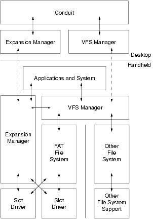

|
|
|
C/C++ Sync Suite Companion for Macintosh Palm OS® Conduit Development Kit for Macintosh, Version 4.03 Verifying Handheld Compatibility Determining a Card's Capabilities Working with Palm OS Databases Enumerating the Files in a Directory Determining the Default Directory for a Particular File Type |
This chapter describes how to work with handheld expansion cards and add-on devices from the desktop using the Expansion and Virtual File System (VFS) Managers. The sections in this chapter are: • Checking for Expansion Cards Expansion SupportBeginning with Palm OS® 4.0, a set of optional system extensions provide a standard mechanism by which Palm OS applications, desktop applications, and conduits can take advantage of the expansion capabilities of various Palm Powered™ handhelds. This capability not only augments the memory and I/O of the handheld, but facilitates data interchange with other Palm Powered handhelds and with devices that are not running Palm OS. These other devices include digital cameras, digital audio players, desktop or laptop computers, and the like. This section covers the following topics: • Primary vs. Secondary Storage Primary vs. Secondary StorageAll Palm Powered handhelds contain primary storage — directly addressable memory that is used for both long-term and temporary storage. This includes storage RAM, used to hold nonvolatile user data and applications; and dynamic RAM, which is used as working space for temporary allocations. On most handhelds, primary storage is contained entirely within the handheld itself. The Palm OS memory architecture does not limit handhelds to this, however; handhelds can be designed to accept additional storage RAM. Some products developed by Handspring work this way; memory modules plugged into the Springboard slot are fully-addressable and appear to a Palm OS application as additional storage RAM. To access primary storage RAM from the desktop, conduits make Sync Manager API calls during a HotSync® operation (see Chapter 6, "Using the Sync Manager API,"). Secondary storage, by contrast, is designed primarily to be add-on nonvolatile storage. Although not limited to any particular implementation, most secondary storage media: • can be inserted and removed from the expansion slot at will • are based upon a third-party standard, such as Secure Digital (SD), MultiMediaCard (MMC), CompactFlash, Sony's Memory Stick, and others • present a serial interface, accessing data one bit, byte, or block at a time Conduits access primary storage through the Sync Manager during a HotSync operation. To access secondary storage, however, conduits use the Expansion and VFS Managers. These have been designed to support as broad a range of serial expansion architectures as possible. Desktop applications or installers have, in the past, used the Install Aide API to queue applications and databases for the Install conduit to install in primary storage on the handheld during the next HotSync operation. With Palm OS 4.0 and HotSync Manager 3.0, the new User Manager API lets applications queue files for the Install conduit to copy from the desktop to secondary storage on expansion cards. The User Manager API also enables desktop applications and installers to access information about handheld users on the desktop as well as expansion slots on users' handhelds. For more information about the User Manager API, see Chapter 6, "User Manager API," in the C/C++ Sync Suite Reference for Macintosh. Expansion SlotThe expansion slots found on many Palm Powered handhelds vary depending on the manufacturer. While some may accept SD and MMC cards, others may accept Memory Stick or CompactFlash. Note that there is no restriction on the number of expansion slots that handhelds can have. Depending on the expansion technology used, there can be a wide variety of expansion cards usable with a given handheld: • Storage cards provide secondary storage and can either be used to hold additional applications and data, or can be used for a specific purpose, for instance as a backup mechanism. • ROM cards hold dedicated applications and data. • I/O cards extend the handheld's I/O capabilities. A modem, for instance, could provide wired access, while a Bluetooth transceiver could add wireless capability. • "Combo" cards provide both additional storage or ROM along with some I/O capability. Universal ConnectorCertain newer Palm Powered handhelds may be equipped with a universal connector that connects the handheld to a HotSync cradle. This connector can be used to connect the handheld to snap-on I/O devices as well. A special slot driver dedicated to this connector allows handheld-to-accessory communication using the serial portion of the connector. This "plug and play" slot driver presents the peripheral as a card in a slot, even to the extent of providing the card insertion notification when the peripheral is attached. Because the universal connector's slot driver makes a snap-on peripheral appear to be a card in a slot, such peripherals can be treated as expansion cards by the handheld application. From a conduit's perspective, such a peripheral is not accessible during a cradle-based HotSync operation, because the universal connector is physically unavailable to a peripheral if it is used by the HotSync cradle. However, if the HotSync operation is via a wireless connection — for example, infrared — then a conduit can access such a peripheral. See "Custom Calls" for a discussion of how conduits can make custom calls to access custom file systems or I/O devices. For the remainder of this chapter, wherever an I/O card could be used, the phrase "expansion card" can be taken to mean both "expansion card" and "plug and play peripheral," but only if the the HotSync operation is not via the universal connector. Architectural OverviewFigure 8.1 illustrates the Palm OS expansion architecture. It is designed to be flexible enough to support multiple file systems and diverse physical expansion mechanisms while still presenting a consistent set of APIs to applications and to other parts of Palm OS. The following sections describe the major components of the Palm OS expansion architecture. Working from the bottom up, those components are: Figure 8.1 Palm OS expansion architecture

Slot DriversA slot driver is a standard Palm OS shared library on the handheld. It is a special library that encapsulates direct access to the hardware and provides a standard set of services to the Expansion Manager and, optionally, to file system libraries. As illustrated in Figure 8.1, neither handheld applications nor conduits normally interact directly with slot drivers. Each expansion slot has a slot driver associated with it. Slots are identified by a unique slot reference number, which is assigned by the Expansion Manager on the handheld. Expansion cards themselves are not numbered individually; applications typically reference the slot into which a card is inserted. Note, however, that a slot may or may not have a card in it at any given time, and that a card can be inserted and removed while an application is running. The Expansion Manager on the handheld identifies slots by slot reference numbers. These slot reference numbers may change depending on the order in which slot drivers are loaded by the Expansion Manager. Moreover, slot reference numbers are available only to conduits during a HotSync operation via the Expansion Manager API. Therefore HotSync Manager assigns slot IDs to slots on the handheld at the beginning of each HotSync operation and saves them for the corresponding user in the user data store on the desktop. The User Manager API, which is not used during a HotSync operation, uses slot IDs to identify slots instead of slot reference numbers. This API simply returns the information saved on the desktop during the last HotSync operation, so this information might not be accurate for the next HotSync operation because the user might have changed or updated the handheld between HotSync operations. File SystemsThe Palm OS expansion architecture defines a common interface for all file system implementations on Palm OS. This interface consists of a complete set of APIs for interacting with the file system, including the ability to open, close, read, write, and delete both files and directories on named volumes. Almost all of these handheld APIs are available on the desktop so that conduits can interact with file systems almost as completely as handheld applications can. File system implementations are packaged as shared libraries on the handheld. They are modular plug-ins that add support for a particular type of file system, such as VFAT, HFS, or NFS. The Palm OS expansion architecture allows multiple file system libraries to be installed at any given time. Typically, an implementation of the VFAT file system is present. VFAT is the industry standard for flash memory cards of all types. It enables easy transfer of data and or applications to desktops and other devices. The VFAT file system library included with Palm OS software versions 4.0 and later natively supports VFAT file systems on secondary storage media. It is able to recognize and mount FAT and VFAT file systems, and offers to reformat unrecognizable or corrupted media. Because the VFAT file system requires long filenames to be stored in Unicode/UCS2 format, the standard VFAT file system library supports conversion between UCS2 and Shift-JIS (the standard Palm OS multi-byte character encoding), and between UCS2 and the Palm OS/Latin encoding. VFS ManagerThe Virtual File System (VFS) Manager provides a unified API that gives handheld applications and desktop conduits access to many different file systems on many different media types. It abstracts the underlying file systems so that applications and conduits can be written without regard to the actual file system in use. The VFS Manager provides conduits many API functions for manipulating files, directories, and volumes during a HotSync operation. The VFS Manager and the Sync Manager APIsWith the addition of the VFS Manager to the C/C++ Sync Suite, there are now two distinct ways that conduits can store and retrieve Palm OS user data: • The Sync Manager accesses resource and record databases in the handheld's primary storage RAM. It effectively calls the handheld's Data Manager, which was specifically designed to make the most of the limited dynamic RAM and the nonvolatile RAM used instead of disk storage on most handhelds. Use the Sync Manager to store and retrieve Palm OS user data when storage on the handheld is all that is needed, or when efficient access to data is paramount. • The VFS and Expansion Managers were designed specifically to support many types of expansion memory as secondary storage. The VFS Manager API presents a consistent interface to many different types of file systems on many types of external media. Conduits that use the VFS Manager API can support the widest variety of file systems. Use the VFS Manager when your conduit needs to read and write data stored on external media. Conduits should use the appropriate APIs for each given situation. The Sync Manager, being an efficient manager of storage in the storage heap, should be used whenever access to external media is not absolutely needed. Use the VFS Manager API when interoperability and file system access is needed. Note, however, that the VFS Manager adds the extra overhead of buffering all reads and writes in the handheld's memory when accessing data, so only conduits that specifically need this functionality should use the VFS Manager. For more information on the Sync Manager see Chapter 6, "Using the Sync Manager API." For details of the API presented by the VFS Manager, see Chapter 5, "Virtual File System Manager API," in the C/C++ Sync Suite Reference for Macintosh. Expansion ManagerThe Expansion Manager is a software layer that manages slot drivers on Palm Powered handhelds. Supported expansion card types include, but are not limited to, Memory Stick and SD cards. The Expansion Manager does not support these expansion cards directly; rather, it provides an architecture and higher level set of API functions that, with the help of low-level slot drivers and file system libraries, support these types of media. The Expansion Manager on the handheld: • broadcasts notification of card insertion and removal • plays sounds to signify card insertion and removal • mounts and unmounts card-resident volumes The Expansion Manager API for conduits provides an interface to the Expansion Manager on the handheld during a HotSync operation. Through this interface, conduits can determine whether an expansion card is present in a slot and get information about those cards. For details of the API presented by the Expansion Manager, see Chapter 4, "Expansion Manager API," in the C/C++ Sync Suite Reference for Macintosh. Standard DirectoriesThe user experience presented by Palm OS is simpler and more intuitive than that of a typical desktop computer. Part of this simplicity arises from the fact that Palm OS does not present a file system to the user. Users do not have to understand the complexities of a typical file system; applications are readily available with one or two taps of a button or icon, and data associated with those applications is accessible only through each application. Maintaining this simplicity of user operation while supporting a file system on an expansion card is made possible through a standard set of directories on the expansion card. Table 8.1 lists the standard directory layout for all "standards compliant" Palm OS secondary storage. All Palm OS relevant data should be in the /PALM directory (or in a subdirectory of the /PALM directory), effectively partitioning off a private name space. In addition to these standard directories, the VFS Manager supports the concept of a default directory; a directory in which data of a particular type is typically stored. See "Determining the Default Directory for a Particular File Type" for more information. Card Insertion and RemovalThe Expansion Manager supports the insertion and removal of expansion media at any time. The handheld continues to run as before, though an application switch may occur upon card insertion. The handheld need not be reset or otherwise explicitly informed that a card has been inserted or removed. WARNING! Because of the way certain expansion cards are constructed, if the user removes an expansion card while an application or conduit is writing to it, in certain rare circumstances it is possible for the card to become damaged to the point where either it can no longer be used or it must be reformatted. To the greatest extent possible, applications and conduits should write to the card only at well-defined points. The card can be removed without fear of damage while an application or conduit is reading from it, however. If the user removes a card while your conduit is accessing it during a HotSync operation, the Expansion Manager or VFS Manager function fails. PalmSource, Inc. recommends that your conduit always check errors returned by all API functions and add helpful messages to the user in the HotSync log. Checking for Expansion CardsBefore looking for an expansion card, your conduit should first make sure that the handheld supports expansion by verifying the presence of the Expansion and VFS Managers. It can then query for mounted volumes. Finally, your conduit may want to ascertain the capabilities of the card; whether it has memory, whether it does I/O, and so on. The following sections describe each of these steps: • Verifying Handheld Compatibility • Checking for Mounted Volumes • Determining a Card's Capabilities Verifying Handheld CompatibilityThere are many different types of Palm Powered handhelds, and in the future there will be many more. Some will have expansion slots to support secondary storage, and some will not. Hardware to support secondary storage is optional, and may or may not be present on a given type of handheld. Because the Expansion and VFS Managers are of no use on a handheld that has no physical expansion capability, they are optional system extensions that are not present on every type of Palm Powered handheld. Because of the great variability both in handheld configuration and in the modules that can be plugged into or snapped onto the handheld, conduits should not attempt to detect the manufacturer or model of a specific handheld when determining whether it supports secondary storage. Instead, check for the presence and capabilities of the underlying operating system. The VFS Manager and the Expansion Manager on the handheld are individual system extensions that are both optional. They both make use of other parts of the operating system that were introduced in Palm OS software version 4.0. NOTE: Although your conduit could check for the presence of both the VFS and Expansion Managers, it can take advantage of the fact that the VFS Manager relies on the Expansion Manager and is not present without it. Therefore, if the VFS Manager is present, you can safely assume that the Expansion Manager is present as well. Therefore your conduit must check for the presence of the VFS Manager on the handheld before calling any VFS or Expansion Manager API functions. This section presents two methods of verifying the presence of the VFS Manager on the handheld: • Using the VFSSupport Function • Using the SyncReadFeature Function Using the VFSSupport FunctionThe desktop VFS Manager API provides the VFSSupport function to verify whether the handheld has an expansion slot and whether any file systems are present. When you call VFSSupport, it passes back the version of the Expansion Manager on the handheld — which is identical to the VFS Manager version number — or zero, if no expansion slot is present. In a second parameter, it passes back the number of volumes present on the card or zero, if there is no file system present on the card or no card in the slot. NOTE: The VFSSupport function is the primary method for conduits to determine whether a handheld has expansion slots. This information has already been obtained by the desktop VFS Manager, so no additional calls are made to the handheld at the time your conduit calls VFSSupport — which makes it more efficient than using SyncReadFeature. Using the SyncReadFeature FunctionThe Sync Manager API provides SyncReadFeature to verify the presence of defined feature sets on the handheld. To check for the VFS Manager's system feature, do the following: • call SyncReadFeature • supply sysFileCVFSMgr for the feature creator • supply vfsFtrIDVersion for the feature number Listing 8.1 shows how to use SyncReadFeature to check for the presence and proper version of the VFS Manger. Note that expectedVFSMgrVersionNum should be replaced by the actual version number you expect. Listing 8.1 SyncReadFeature to verify the presence of the VFS Manager UINT32 vfsMgrVersion; long err; err = SyncReadFeature(sysFileCVFSMgr, vfsFtrIDVersion, &vfsMgrVersion); if(err){ // The VFS Manager is not installed. } else { // Check the version number of the VFS Manager, // if necessary. if(vfsMgrVersion == expectedVFSMgrVersionNum) // Everything is OK. } Even though presence of the VFS Manager implies presence of the Expansion Manager, you can also check for the Expansion Manager's system feature as follows: • call SyncReadFeature • supply sysFileCExpansionMgr for the feature creator • supply expFtrIDVersion for the feature number Listing 8.2 shows how to use SyncReadFeature to check for the presence and proper version of the Expansion Manger. Note that expectedExpMgrVersionNum should be replaced by the actual version number you expect. Listing 8.2 SyncReadFeature to verify the presence of the Expansion Manager UINT32 expMgrVersion; long err; err = SyncReadFeature(sysFileCExpansionMgr, expFtrIDVersion, &expMgrVersion); if(err){ // The Expansion Manager is not installed. } else { // Check version number of the Expansion Manager, // if necessary. if(expMgrVersion == expectedExpMgrVersionNum) // Everything is OK. } Checking for Mounted VolumesConduits rely on the fact that Palm OS automatically mounts any recognized volumes inserted into or snapped onto the handheld. Therefore conduits can simply enumerate the mounted volumes and select one as appropriate. Listing 8.3 illustrates how to do this. Listing 8.3 Enumerating mounted volumes WORD numVolumes = 0; WORD *pwVolRefNumList; // The first call returns only the number of mounted volumes, // not their reference numbers. VFSVolumeEnumerate (&numVolumes, NULL); if (numVolumes) { // Allocate buffer for volume reference list. pwVolRefList = new WORD [numVolumes]; if (pwVolRefList != NULL) { // Get the volume reference numbers. VFSVolumeEnumerate (&numVolumes, pwVolRefList); } } The volume reference numbers obtained from VFSVolumeEnumerate can then be used with many of the volume, directory, and file operations that are described later in this chapter. Occasionally a conduit needs to know more than that there is secondary storage available for use. Those conduits likely need to take a few extra steps, beginning with checking each of the handheld's slots, as described in the next section. Enumerating SlotsBefore you can determine which expansion modules are attached to a handheld, you must first determine how those modules could be attached. Expansion cards and some I/O devices could be plugged into physical slots, and snap-on modules could be connected through the handheld's universal connector. Irrespective of how they are physically connected, the Expansion Manager presents these to the developer as slots. The ExpSlotEnumerate function makes it simple to enumerate these slots. Listing 8.4 illustrates the use of this function. Listing 8.4 Enumerate a handheld's expansion slots WORD wSlotRefList[32]; // Buffer for slot reference numbers. WORD wSlotRefCount; // Number of entries allocated for list. long retval; // Allocate enough space for buffer. wSlotRefCount = sizeof (wSlotRefList) / sizeof (wSlotRefList[0]); retval = ExpSlotEnumerate(&wSlotRefCount, wSlotRefList, NULL); The array of slot reference numbers passed back by ExpSlotEnumerate uniquely identify all slots. A slot reference number can be supplied to various Expansion Manager functions to obtain information about the slot, such as whether there is a card or other expansion module present in the slot. Checking a Slot for the Presence of a CardUse the ExpCardPresent function to determine whether a card is present in a given slot. Given the slot reference number, this function returns SYNCERR_NONE if there is a card in the slot, or an error if either there is no card in the slot or there is a problem with the specified slot. Determining a Card's CapabilitiesJust knowing that an expansion card is inserted into a slot or connected to the handheld is not enough; your conduit needs to know something about the card to ensure that the operations it needs to perform are compatible with the card. For instance, if your conduit needs to write data to the card, its important to know whether writing is permitted. The capabilities available to your conduit depend not only on the card but on the slot driver as well. Handheld manufacturers will provide one or more slot drivers that define standard interfaces to certain classes of expansion hardware. Card and device manufacturers may also choose to provide card-specific slot drivers, or they may require that applications use the slot custom control function and a registered creator code to access and control certain cards. The slot driver is responsible for querying expansion cards for a standard set of capabilities. When a slot driver is present for a given expansion card, you can use the ExpCardInfo function to determine the following: • the name of the expansion card's manufacturer • the name of the expansion card • the "device class," or type of expansion card. Values returned here might include "Ethernet" or "Backup" • a unique identifier for the device, such as a serial number • whether the card supports both reading and writing, or whether it is read-only Note that the existence of the ExpCardInfo function does not imply that all expansion cards support these capabilities. It means only that the slot driver is able to assess a card and report its findings up to the Expansion Manager. Volume OperationsIf an expansion card supports a file system, the VFS Manager allows you to perform a number of standard volume operations. To determine which volumes are currently mounted and available, use VFSVolumeEnumerate. This function, the use of which is illustrated in "Checking for Mounted Volumes," returns a list of volume reference numbers, which you select from and then supply to the remainder of the volume operations. NOTE: Volume reference numbers can change each time the handheld mounts a given volume. To keep track of a particular volume, save the volume's label rather than its reference number. When the user inserts a card containing a mountable volume into a slot, the VFS Manager attempts to mount the volume automatically. Conduits cannot otherwise mount a volume. Use VFSVolumeFormat to format a volume. Once the card has been formatted, the VFS Manager automatically mounts it and VFSVolumeFormat passes back a new volume reference number. The VFSVolumeGetLabel and VFSVolumeSetLabel functions get and set the volume label, respectively. Because the file system is responsible for verifying the validity of strings, you can try to set the volume label to any desired value. If the file system does not natively support the name given, the VFS Manager creates the /VOLUME.NAM file used to support long volume names (see "Naming Volumes" for more information) or you get an error back if the file system does not support the supplied string. NOTE: Most conduits should not need to call the VFSVolumeSetLabel function. This function may create or delete a file in the root directory, which would invalidate any current calls to VFSDirEntryEnumerate. Additional information about the volume can be obtained through the use of VFSVolumeSize and VFSVolumeInfo. As the name implies, VFSVolumeSize returns size information about the volume. In particular, it returns both the total amount of space on the volume, in bytes, and the amount of that volume's space that is currently in use, again in bytes. VFSVolumeInfo returns various pieces of information about the volume, including: • whether the volume is hidden • whether the volume is read-only • whether the volume is supported by a slot driver, or is being simulated by Palm OS Emulator • the type and creator of the underlying file system • the slot with which the volume is associated, and the reference number of the slot driver controlling the slot • the type of media on which this volume is located, such as SD, CompactFlash, or Memory Stick All of the above information is returned encapsulated within a VolumeInfoType structure. Whether the volume is hidden or read-only is further encoded into a single field within this structure; see "Volume Attributes" in the C/C++ Sync Suite Reference for Macintosh for the bits that make up this field. The rest of this section covers the following topics: Hidden VolumesIncluded among the volume attributes is a "hidden" bit, vfsVolumeAttrHidden, that indicates whether the volume on the card is to be visible or hidden. Hidden volumes are typically not meant to be directly available to the user; the Launcher and the CardInfo application both ignore all hidden volumes. To make a volume hidden, simply create an empty file named HIDDEN.VOL in the /PALM directory. The VFSVolumeInfo function looks for this file and, if found, returns the vfsVolumeAttrHidden bit along with the volume's other attributes. NOTE: The vfsVolumeAttrHidden attribute is not defined in the desktop VFS Manager header file but can be passed back in a VolumeInfoType structure. It is defined in the handheld's VFS Manager header file available in the Palm OS SDK, so you can copy it from that file to the desktop VFSMgr.h file. Matching Volumes to SlotsIn most cases, a conduit does not need to know the specifics of an expansion card as provided by the ExpCardInfo function. Often, the information provided by the VFSVolumeInfo function is enough. Some applications need to know more about a particular volume, however. The name of the manufacturer or the type of card, for instance, may be important. The VolumeInfoType structure returned from VFSVolumeInfo contains a slotRefNum field that can be passed to ExpCardInfo. This allows you to obtain specific information about the card on which a particular volume is located. Obtaining volume information that corresponds to a given slot reference number is not quite so simple, because there is no function that returns the volume reference number given a slot reference number. If the volumes are slot-based, you can, however, iterate through the mounted volumes and check each volume's slot reference number. (To determine whether a volume is slot-based, in the VolumeInfoType structure check whether mountClass is set to sysFileTSlotDriver before accessing the volume specified by slotRefNum.) Naming VolumesDifferent handheld file system libraries support volume names of different maximum lengths and have different restrictions on character sets. The file system library is responsible for verifying whether or not a given volume name is valid, and returns an error if it is not. From a conduit developer's standpoint, volume names can be up to 255 characters long, and can include any printable character. The file system library is responsible for translating the volume name into a format that is acceptable to the underlying file system. For example, when the 8.3 naming convention is used to translate a long volume name, the first eleven valid, non-space characters are used. Valid characters in this instance are A-Z, 0-9, $, %, ', -, _, @, ~, ', !, (, ), ^, #, and &. For more information on naming volumes on handheld expansion cards, see the Palm OS Programmer's Companion. File OperationsAll of the familiar operations you use to operate on files in a desktop application are supported by the VFS Manager for handheld expansion cards; these are listed in "Common File Operations." In addition, the VFS Manager includes a set of functions that simplify the way you work with files that represent Palm OS record databases (PDB) or resource databases (PRC). These are covered in "Working with Palm OS Databases." This section covers the following topics: • Working with Palm OS Databases Common File OperationsAs shown in Table 8.2, the VFS Manager provides all of the standard file operations that should be familiar from desktop and larger computer systems. Because these functions work largely as you would expect, their use is not detailed here. See the descriptions of each individual function in Chapter 5, "Virtual File System Manager API," in the C/C++ Sync Suite Reference for Macintosh for the parameters, return values, and side effects of each. Note that some of these functions can be applied to both files and directories, while others work only with files.
Once a file has been opened, it is identified by a unique file reference number: a FileRef. Functions that work with open files take a file reference. Others, such as VFSFileOpen, require a volume reference and a path that identifies the file within the volume. Note that all paths are volume relative, and absolute within that volume: the VFS Manager has no concept of a "current working directory," so relative path names are not supported. The directory separator character is the forward slash: "/". The root directory for the specified volume is specified by a path of "/". Naming FilesDifferent file systems support filenames and paths of different maximum lengths. The file system library is responsible for verifying whether or not a given path is valid and returns an error if it is not valid. From a conduit developer's standpoint, filenames can be up to 255 characters long and can include any normal character including spaces and lowercase characters in any character set. They can also include the following special characters: $ % ' - _ @ ~ ' ! ( ) ^ # & + , ; = [ ] The file system library is responsible for translating each filename and path into a format that is acceptable to the underlying file system. For example, when the 8.3 naming convention is used to translate a long filename, the following guidelines are used: • The name is created from the first six valid, non-space characters which appear before the last period. The only valid characters are A-Z, 0-9, $, %, ', -, _, @, ~, ', !, (, ), ^, #, and &. • The extension is the first three valid characters after the last period. • The end of the six byte name has "~1" appended to it for the first occurrence of the shortened filename. Each subsequent occurrence uses the next unique number, so the second occurrence would have "~2" appended, and so on. The standard VFAT file system library provided with all Palm Powered handhelds that support expansion uses the above rules to create FAT-compliant names from long filenames. Working with Palm OS DatabasesExpansion cards are often used to hold Palm OS applications and data in PRC and PDB format. Because of the way that secondary storage media are connected to the Palm Powered handheld, applications cannot be run directly from the expansion card, nor can conduits manipulate databases using the Sync Manager without first transferring them to main memory with the VFS Manager. Conduits written to use the VFS Manager, however, can operate directly on files located on an expansion card. NOTE: Whenever possible give the same name to the PRC/PDB file and to the database. If the PRC/PDB filename differs from the database name, and the user copies your database from the card to the handheld and then to another card, the filename may change. This is because the database name is used when a database is copied from the handheld to the card. Transferring Palm OS Databases to and from Expansion CardsThe VFSExportDatabaseToFile function converts a database from its internal format on the handheld to its equivalent PRC or PDB file format and transfers it to an expansion card. The VFSImportDatabaseFromFile function does the reverse; it transfers the .prc or .pdb file to primary storage memory and converts it to the internal format used by Palm OS. Use these functions when moving Palm OS databases between main memory and an expansion card. The VFSExportDatabaseToFile and VFSImportDatabaseFromFile routines are atomic and, depending on the size of the database and the mechanism by which it is being transferred, can take some time. Directory OperationsAll of the familiar operations you would use to operate on directories are supported by the VFS Manager; these are listed in "Common Directory Operations." One common operation — determining the files that are contained within a given directory — is covered in some detail in "Enumerating the Files in a Directory." To improve data interchange with devices that are not running Palm OS, expansion card manufacturers have specified default directories for certain file types. "Determining the Default Directory for a Particular File Type" discusses how you can both determine and set the default directory for a given file type. This section covers the following topics: • Enumerating the Files in a Directory • Determining the Default Directory for a Particular File Type • Default Directories Registered at Initialization Directory PathsAll paths are volume relative, and absolute within that volume: the VFS Manager has no concept of a "current working directory," so relative path names are not supported. The directory separator character is the forward slash: "/". The root directory for the specified volume is specified by a path of "/". See "Naming Files" for details on valid characters to use in file and directory names. Common Directory OperationsAs shown in Table 8.3, the VFS Manager provides all of the standard directory operations that should be familiar from desktop and larger computer systems. Because these functions work largely as you would expect, their use is not detailed here. See the descriptions of each individual function Chapter 5, "Virtual File System Manager API," in the C/C++ Sync Suite Reference for Macintosh for the parameters, return values, and side effects of each. Note that most of these functions can be applied to files as well as directories.
Enumerating the Files in a DirectoryEnumerating the files within a directory is made with the VFSDirEntryEnumerate function. Listing 8.5 illustrates the use of this function. Note that volRefNum must be declared and initialized prior to the following code. Listing 8.5 Enumerating a directory's contents // Open the directory and iterate through the files in it. // volRefNum must have already been defined. FileRef dirRef; err = VFSFileOpen (volRefNum, "/", vfsModeRead, &dirRef); if(err == errNone) { // Iterate through all the files in the open directory UInt32 fileIterator; FileInfoType fileInfo; char *fileName = new char[256]; // Should check for err. fileInfo.nameP = fileName; // Point to local buffer. fileInfo.nameBufLen = sizeof(fileName); fileIterator = expIteratorStart; while (fileIterator != expIteratorStop) { // Get the next file err = VFSDirEntryEnumerate(dirRef, &fileIterator, &fileInfo); if(err == errNone) { // Process the file here. } } else { // Handle directory open error here. } delete [] fileName; } Each time through the while loop, VFSDirEntryEnumerate sets the FileInfoType structure as appropriate for the file currently being enumerated. Note that if you want the filename, it is not enough to simply allocate space for the FileInfoType structure; you must also allocate a buffer for the filename, set the appropriate pointer to it in the FileInfoType structure, and specify your buffer's length. Because the only other information encapsulated within FileInfoType is the file's attributes, most conduits also want to know the file's name. Determining the Default Directory for a Particular File TypeAs explained in "Standard Directories," the expansion capabilities of Palm OS include a mechanism to map MIME types or file extensions to specific directory names. This mechanism is specific to the slot driver: where an image might be stored in the "/Images" directory on a Memory Stick, on an MMC card it may be stored in the "/DCIM" directory. The VFS Manager includes a function that enables your conduit to get the default directory on a particular volume for a given file extension or MIME type; unlike handheld applications, conduits cannot register and unregister their own default directories. The VFSGetDefaultDirectory function takes a volume reference and a string containing the file extension or MIME type and returns a string containing the full path to the corresponding default directory. When specifying the file type, either supply a MIME media type/subtype pair, such as "image/jpeg", "text/plain", or "audio/basic"; or a file extension, such as ".jpeg". As with most other such VFS Manager functions, you must pre-allocate a buffer to contain the returned path. Supply a pointer to this buffer along with the buffer's length. The length is updated upon return to indicate the actual length of the path, which will not exceed the originally-specified buffer length. The default directory registered for a given file type is intended to be the "root" default directory. If a given default directory has one or more subdirectories, conduits should also search those subdirectories for files of the appropriate type. VFSGetDefaultDirectory allows you to determine the directory associated with a particular file suffix. However, there is no way to get the entire list of file suffixes that are mapped to default directories. Default Directories Registered at InitializationThe VFS Manager registers the file types in Table 8.4 under the expMediaType_Any media type, which VFSGetDefaultDirectory reverts to when there is no default registered by the slot driver for a given media type. The SD slot driver provided by PalmSource, Inc. registers the file types in Table 8.5, because it has an appropriate specification for these file types.
Although the directories registered by this SD slot driver all happen to be duplicates of the default registrations made by the VFS Manager, they are also registered under the SD media type because the SD specification explicitly includes them. Slot drivers written by other Palm Powered handheld manufacturers that support different media types, such as Memory Stick, register default directories appropriate to their media's specifications. In some cases these registrations may override the expMediaType_Any media type registration, or in some cases augment the expMediaType_Any registrations with file types not previously registered. These registrations are intended to aid applications developers, but you are not required to follow them. Although you can choose to ignore these registrations, by following them you improve interoperability between applications and other devices. For example, a digital camera which conforms to the media specifications puts its pictures into the registered directory (or a subdirectory of it) appropriate for the image format and media type. By looking up the registered directory for that format, an image viewer application on the handheld can easily find the images without having to search the entire card. These registrations also help prevent different developers from hard-coding different paths for specific file types. Thus, if a user has two different image viewer applications, both look in the same location and find the same set of images. Registering these file types at initialization allows the default install conduit to transfer files of these types to an expansion card. During the HotSync process, files of the registered types are placed directly in the specified directories on the card. Custom CallsRecognizing that some file systems may implement functionality not covered by the APIs included in the VFS and Expansion Managers, the VFS Manager includes a single function that exists solely to give developers access to the underlying file system. This function, VFSCustomControl, takes a registered creator ID and a selector that together identify the operation that is to be performed. VFSCustomControl can either request that a specific file system perform the specified operation, or it can iterate through all of the currently-registered file systems in an effort to locate one that responds to the desired operation. Parameters are passed to the file system's custom function through a single VFSCustomControl parameter. This parameter, pDataBuf, is declared as a void * so you can pass a pointer to a structure of any type. A second parameter, valueLenP, allows you to specify the length of pDataBuf. Note that these values are simply passed to the file system and are in reality dependent upon the underlying file system. See the description of VFSCustomControl in the C/C++ Sync Suite Reference for Macintosh for more information. Because VFSCustomControl is designed to allow access to nonstandard functionality provided by a particular file system, see the documentation provided with that file system for a list of any custom functions that it provides. The rest of this section discusses "Custom I/O." Custom I/OWhile the Expansion and VFS Managers provide higher-level OS support for secondary storage, they do not attempt to present anything more than a raw interface to custom I/O applications. Because it is not possible to envision all uses of an expansion mechanism, the Expansion and VFS Managers simply try to get out of the way of custom hardware. The Expansion Manager provides insertion and removal notification and can load and unload drivers. Everything else is the responsibility of the application developer. PalmSource, Inc. has defined a common expansion slot driver API which is extensible by Palm OS licensees. This API is designed to support all of the needs of the Expansion Manager, the VFS Manager, and the file system libraries. Conduits that need to communicate with an I/O device, however, may need to go beyond the provided APIs. Such conduits should wherever possible use the slot custom call, which provides direct access to the expansion slot driver. See the developer documentation provided to licensees for more information on slot drivers and the slot custom call. For documentation on functions made available by a particular I/O device, along with how you access those functions, contact the I/O device manufacturer. NOTE: If a custom I/O device connects to the handheld via the same connector as the HotSync cradle, the custom I/O device is, of course, not accessible during a cradle-based HotSync operation. However, if the HotSync operation is via a wireless connection — for example, infrared — then a conduit can access such a device. Summary of Expansion and VFS Managers
|
|||||||||||||||||||||||||||||||||||||||||||||||||||||||||||||||||||||||||||||||||||||||||||||||||||
|
|